의공산업기사 (2009-08-30 기출문제)
1과목: 기초의학 및 의공학
1. 다음 뇌파유도법 중 활성전극과 비활성전극 간의 전위차를 기록하는 유도법은?
- 단극유도법
- 쌍극유도법
- 위상유도법
- 주파수유도법
(정답률: 79%)

2. 다음 중 선형가변차동변환기(LVDT)가 다른 유도성 센서와 상이한 특징은 무엇인가?
- 선형성
- 변위측정
- 전압측정
- 위상변화
(정답률: 53%)
3. 다음 그림과 같이 철심이 위치를 코일간의 유도결합을 통해 측정하는 위치 센서는 무엇인가?
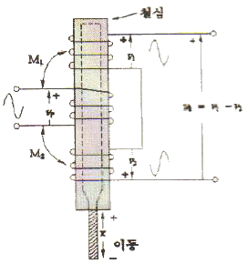
- 스트레인게이지(strain gage)
- 용량성 변위계(capacitive transdecer)
- 유도성 휘스톤브리지(inductive wheatstone bridge)
- 선형 전압 미분변압기(linear voltage differential transformer)
(정답률: 76%)
4. 다음 중 캐패시터의 정전용량을 측정하는 용량성 센서에서 정전용량(C)의 식으로 옳은 것은? (단, 판의 면전 : S, 판 사이 간격 : d, 유전율 : ε)
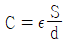
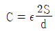
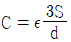
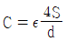
(정답률: 87%)
5. 다음 전극의 분류 중 사용 부위에 따른 분류가 아닌 것은?
- 표면 전극
- 습윤 전극
- 미세 전극
- 두피용 전극
(정답률: 82%)
6. 다음 중 일차뼈 되기 중심과 이차뼈 되기 중심에 있는 연골로서 뼈의 길이 성장이 일어나는 것은?
- 치밀뼈(compact bone)
- 뼈끝판(epiphyseal plate)
- 해면뼈(sponge bone)
- 관절연골(atricular cartllage)
(정답률: 90%)
7. 다음 ( ) 안에 알맞은 것은?
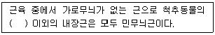
- 심장근
- 평활근
- 골격근
- 가로무늬근
(정답률: 77%)
8. 다음 중 유도성 센서를 이용한 주 측정량은?
- 온도
- 변위
- 압력
- 빛
(정답률: 86%)
9. 다음 그림의 전극은?
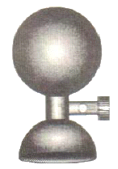
- 부유 전극(floating electrode)
- 흡착 전극(suction electrode)
- 금속판 전극(metal plate electrode)
- 가요성 전극(flexible electrode)
(정답률: 93%)
10. 다음 중 센서의 성능을 나타내는 용어 중 입력값이 변화 할 수 있는 최대 허용범위를 나타내는 것은?
- 정밀도
- 레인지
- 스팬
- 분해능
(정답률: 72%)
11. 다음의 생체신호 측정용 전극에 대한 설명 중 틀린 것은?
- 생체 내부에서는 이온에 의한 전류가 생성되고, 전자시스템 내에서는 자유전자의 이동에 의한 전류가 만들어 진다.
- 생체표면에 금속 성분의 전극이 부착되면, 이온작용에 의한 일정한 전위를 얻게 되는데, 이 때 얻어지는 전위 값은 온도, 습도와 무관하게 일정한 값을 얻을 수 있다.
- 금속전극과 전해질 경계면(interface)에서는 전하분리 현상에 의한 전기 이중층(electric doublelayer)이 형성된다.
- 전극은 생체내 이온에 의한 전류를 전자회로내의 자유전자에 의한 전류로 변환해 주는 변환기(transducer)의 역할을 한다.
(정답률: 83%)
12. 다음 중 생체신호를 전기신호로 바꾸어주는 것을 무엇이라 하는가?
- 측정
- 감도
- 센서
- 스팬
(정답률: 84%)
13. 다음 중 휴지 전위(resting potential)와 관련 있는 것은?
- H2O
- O2
- K+이온
- Ca+이온
(정답률: 80%)
14. 다음 중 사람의 혈압을 정의할 때 가장 옳은 것은?
- 심장의 좌심실로부터 대동맥 쪽을 나온 직후의 대동맥 내압을 말한다.
- 심장의 우심실로부터 대동맥 쪽을 나온 직후의 대동맥 내압을 말한다.
- 심장의 좌심실로부터 대정맥 쪽을 나온 직후의 대동맥 내압을 말한다.
- 심장의 우심실로부터 대정맥 쪽을 나온 직후의 대동맥 내압을 말한다.
(정답률: 63%)
15. 다음 중 근위세뇨관 및 Henle 고리의 수분 재흡수 감소에 기인한 신기능 장애 현상은?
- 요독증
- 수분중독
- 수분이뇨
- 삼투성이뇨
(정답률: 76%)
16. 인체의 장기 중 인슐린을 분비하는 곳으로 이 조직이 없으면 당뇨병에 걸리는 것은?
- 췌장
- 신장
- 폐
- 심장
(정답률: 90%)
17. 다음 중 청각과 평형감각의 설명으로 틀린 것은?
- 청각은 외이도를 거쳐 고막에 도달하여 청소골과 달팽이관에 전달된다.
- 평형가각의 수용기는 반고리관 및 전정기관이다.
- 반고리관은 내이 안에 거의 직각으로 연결된 3개의 반원형 모양을 하고 있다.
- 반고리관은 위치감각을 전정기관은 회전감각을 담당한다.
(정답률: 79%)
18. 다음 중 신경 세포에 대한 설명으로 옳지 않은 것은?
- 신경 세포의 중심부분은 세포체이다.
- 축삭을 싸고 있는 절연체 물질은 미엘린이다.
- 하나의 신경세포는 3개 이상의 축삭을 가지고 있다.
- 축삭의 길이는 경우에 따라서 1M이상이 되는 것도 있다.
(정답률: 88%)
19. 우리 몸의 말초신경계 중에서 민무늬근육, 심장근육 및 샘의 작용을 조절하는 신경계통은?
- 몸신경계(somatic nerve system)
- 자율신경계(sutonomic nerve system)
- 운동신경계(motor nerve system)
- 중추신경계(central nerve system)
(정답률: 81%)
20. 다음 중 신경세포에 달려 신경 자극을 중계하는 가느다란 세포질의 돌기로 신경세포체, 축색돌기와 함께 신경단위의 뉴런을 구성하는 것은?
- 수상돌기(dendrite)
- 말이집(myelin sheath)
- 백질(white matter)
- 슈반세포(schwann cell)
(정답률: 90%)
2과목: 의용전자공학
21. 다음 중 AM 방송에 주로 사용되는 주파수대는?
- 극초단파
- 초단파
- 중파
- 밀리미터파
(정답률: 73%)
22. 다음 내용과 가장 관련 있는 것은?
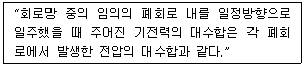
- 테브난의 정리
- 노튼의 정리
- 키르히호프의 제1법칙
- 키르히호프의 제2법칙
(정답률: 87%)
23. 정전용량 100[㎌]의 콘덴서에 1000[V]의 전압이 가해져 있다. 이 콘덴서에 축적되어 있는 에너지는 몇 [J]인가?
- 1000
- 500
- 100
- 50
(정답률: 40%)
24. 입출력 장치와 주기억장치 사이의 데이터 전송을 담당하는 입출력 전담 장치는?
- 콘솔 장치
- 채널 장치
- 터미널 장치
- 상태 레지스터 장치
(정답률: 72%)
25. 다음 중 전자유도 회로에서 기전력에 관한 법칙과 관계 있는 것은?
- 패러데이 법칙
- 옴의 법칙
- 렌츠의 법칙
- 쿨롱의 법칙
(정답률: 73%)
26. 콜피츠(Colpitts) 발진기에 대한 설명으로 옳지 않은 것은?
- Hartley 발진회로보다 높은 주파수의 발진이 용이하다.
- LC 발진기로 가장 널리 사용되고 있다.
- 고조파가 크며 주로 장파대에서 사용한다.
- 트랜지스터내에 존재하는 부유용량으로 발진주파수의 오차가 생길 수 있다.
(정답률: 69%)
27. 다음 불 함수의 대수식이 옳지 않은 것은?
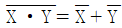
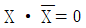
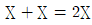
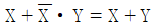
(정답률: 91%)
28. 전압 증폭도가 20[dB]과 40[dB]인 증폭기를 직렬로 연결시킬 경우 총 이득은?
- 10
- 102
- 103
- 104
(정답률: 57%)
29. 혈액 및 생체조직검사처럼 신체로부터 분리된 생체조직을 센서를 이용하여 측정하는 방식은?
- 외부측정
- 침습적측정
- 샘플측정
- 표면측정
(정답률: 88%)
30. 생체계측에 있어서 의학적 매개변수 중 물리적 변수에 해당하지 않는 것은?
- 힘
- 압력
- 음파
- 이온농도
(정답률: 89%)
31. 다음 중 생체압력계측 중 혈압측정에 있어 직접측정 방법인 것은?
- 청진법
- 오실로미터법
- 츠음파센서이용법
- 카테터삽입측정법
(정답률: 82%)
32. 다음 중 P형 반도체에 대한 설명으로 옳은 것은?
- 정류작용을 갖고 있다.
- 다수캐리어가 정공이다.
- 5가 원소를 불순물로 첨가하였다.
- 불순물을 첨가하였으므로 저항률이 순수반도체(진성반도체)보다 크다.
(정답률: 54%)
33. 다음 중 DRAM의 특성이 아닌 것은?
- 일정 시간 경과 후 기억된 정보가 소실된다.
- Refresh 기능이 필요하다.
- 직접도가 높고 SRAM에 비해 속도가 빠르다.
- 일반 PC의 주기억장치로 쓰인다.
(정답률: 79%)
34. 다음 중 호흡기의 평가 기능이 아닌 것은?
- 환기능(Ventilation)
- 분포능(Distribution)
- 확산능(Diffusion)
- 흡수능(Absorption)
(정답률: 88%)
35. 이상적인 다이오드를 사용하여 실효전압 220v 교류를 반파정류 하고 있다. 정류출력에 Capacitor 입력형 평활회로를 연결하였을 때 출력전압은 약 몇 [V]인가? (단, 이 때 다이오드의 순방향 전압강하는 무시하고, 부하전류는 충분히 작은 것으로 가정한다.)
- 117V
- 220V
- 311V
- 541V
(정답률: 66%)
36. 다음 카르노맵을 불대수 식으로 올바르게 표현한 것은?
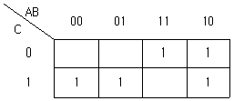
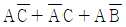
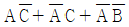
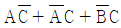
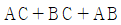
(정답률: 54%)
37. 다음 심전도에 대한 설명 중 틀린 것은?
- 심전도 기록지의 평균이동속도는 25mm/s 이다.
- 정상인의 심전도 파형에서는 P파, QRS군, T파의 순서로 나타난다.
- P파는 심방의 탈분극과 수축으로 인하여 나타나는 현상이다.
- QRS군은 심실의 재분극으로 생기는 현상이다.
(정답률: 86%)
38. 다음 회로의 특성 중 옳은 것을 모두 나열한 것은?
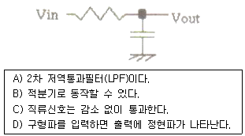
- A, B, C
- B, C
- C, D
- A, D
(정답률: 65%)
39. NPN 트랜지스터의 베이스 전류가 100㎂이고, VCE가 5V일 때 컬렉터 전류는 15mA였다. 이 트랜지스터의 βDC는 몇 [A]인가?
- 50
- 100
- 150
- 200
(정답률: 73%)
40. 다음 중 신호의 특성을 결정하는 요소가 아닌 것은?
- 주파수
- 위성
- 진폭
- 밴드폭
(정답률: 81%)
3과목: 의료안전ㆍ법규 및 정보
41. 다음 중 의료용 기기에서 디지털 영상표현과 통신에 사용되는 여러 가지 표준을 총칭하는 것은?
- HL7
- MITA
- DICOM
- ISO
(정답률: 75%)
42. 의료폐기물은 며칠 이내에 폐기물을 처리하여야 하는가?
- 당일
- 7일
- 30일
- 60일
(정답률: 72%)
43. 다음 중 품목허가를 받지 아니하거나 품목신고를 하지 아니한 의료기기를 판매, 임대, 수여 또는 사용하여, 규정을 위반한 자는 5년 이하의 징역 또는 얼마 이하의 벌금에 처하는가?
- 1천만원
- 2천만원
- 5천만원
- 1억원
(정답률: 71%)
44. 다음 중 의료기기 등급의 재분류를 신청 받은 식품의약품 안전청장은 며칠 이내에 심사 •결정 후 그 결과를 신청인에게 통보하여야 하는가?
- 70일이내
- 80일이내
- 90일이내
- 100일이내
(정답률: 83%)
45. 다음 중 의학자료의 코드화와 관련되어 잘못 기술된 것은?
- 의학자료를 코드화 하면 데이터의 양적 감소가 일어난다.
- 연상코드를 부여함으로써 항목을 쉽게 알아볼 수 있다.
- 코드화를 통해 데이터의 접근성이 향상된다.
- 숫자코드를 사용하면 새로운 코드의 생성이 쉽지 않다.
(정답률: 95%)
46. 다음 중 의료기기취급자에 해당하지 않는 자는?
- 의료기기수출업자
- 의료기기수입업자
- 의료기기수리업자
- 의료기기임대업자
(정답률: 79%)
47. 일반적으로 의료기기의 용기나 외장에 기재할 사항이 아닌 것은?
- 제조업자 또는 수입업자의 상호와 주소
- 수입품의 경우는 제조원(제조국 및 제조사명)
- 제조번호와 제조연월일
- 사용방법 및 사용시 주의사항
(정답률: 88%)
48. 다음 중 전자기적 주위 환경에 영향을 받지않고 다른 것에 영향을 주지도 않는 것의 총칭을 의미하는 것은?
- EMC
- EMI
- EMS
- IRE
(정답률: 56%)
49. 다음 중 내시경 외과수술에서 사용되는 기복장치용으로 공급되는 가스는?
- 탄산
- 질소
- 수소
- 헬륨
(정답률: 70%)
50. 다음 중 의료기기감시원을 임명할 수 없는 자는?
- 식품의약품안전청장
- 시장
- 구청장
- 도지사
(정답률: 64%)
51. 다음( )안에 알맞은 것은?
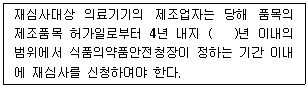
- 5
- 7
- 10
- 20
(정답률: 66%)
52. 다음 중 HL7에 대한 설명과 관계없는 것은?
- 이벤트 중심의 프로토콜 메시지 단위로 정보 전송이 이루어진다.
- 서로 다른 보건의료분야 소프트웨어 애플리케이션간 정보가 호환될 수 있도록 하는 규칙의 집합을 의미한다.
- 원격지간의 의학영상의 전송, 공동 판독 등을 지원하는 의학 영상처리 시스템이다.
- 사용자, 시스템 공급자 및 기타 의료정보 이해관계자들에 의해 합동으로 개발되었다.
(정답률: 82%)
53. 다음 중 통신, 컴퓨터 공학 등 정보통신의 다양한 기술들과 의료서비스가 융합되어 언제 어디서든지 의료서비스를 받을 수 있는 것을 무엇이라고 하는가?
- EDI
- EMR
- PACS
- Telemedicine
(정답률: 68%)
54. 다음 중 전류가 인체에 흘렀을 때 통증, 혼절가능, 기절, 허탈, 피로감을 느낄 수 있는 전류 값은? (단, 이 때 흐른 전류 값은 실효치, 주파수는 60Hz, 1초간 통전 및 매크로쇼크 전류로 한다.)
- 1mA이상
- 10mA이상
- 50mA이상
- 100mA이상
(정답률: 60%)
55. 다음은 의료기기의 제조업자가 준수하여야 할 사항으로 ( )안에 알맞은 것은?
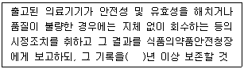
- 1
- 2
- 3
- 5
(정답률: 56%)
56. 다음 중 의료정보고나련 국제 표준이 아닌 것은?
- HL7
- DICOM
- SNOMED
- PACS
(정답률: 76%)
57. 다음 중 의료정보처리 요건이 아닌 것은?
- 신속성
- 정확성
- 간편성
- 예측성
(정답률: 95%)
58. 다음 중 PACS 의 정확한 명칭은?
- Picture Archiving and Communication system
- Picture Archiving and computer System
- Picture Architecture and communication system
- Picture Architecture and computer System
(정답률: 75%)
59. 다음 중 둘 이상의 전기 기기를 동시에 사용할 때 접지점을 반드시 한 곳에 하여야 하는 이유로 가장 타당한 것은?
- 접지점 설치비가 많이 들기 때문에
- 접지점이 2개 이상이면 접지선을 매개로 전류가 인체에 흘러 들어갈 위험성이 있기 때문에
- 설치 장소를 고려해야 하기 때문에
- 관리가 수월하기 때문에
(정답률: 91%)
60. 다음 중 의료기사의 종별에 포함되지 않는 것은?
- 임상병리사
- 물리치료사
- 치과기공사
- 간호조무사
(정답률: 87%)
4과목: 의료기기
61. 다음 중 기능 저하로 혈압이 떨어지면 뇌로 가는 혈류량이 적어져 뇌에 공급되는 산소가 줄어드는 문제를 방지하기 위해 기계장치를 이용하여 부전상태의 심장기능을 보조하는 것은?
- IABP(Intra Aortic Balloon Pump)
- Linac(Linear accelerator)
- MRI(magnetic resonance imaging )
- PET(positron emission tomography)
(정답률: 85%)
62. 다음 중 수액펌프의 종류가 아닌 것은?
- 선형 연동펌프
- 회전형 연동펌프
- 횡격막형 피스톤펌프
- 연속류 혈액펌프
(정답률: 56%)
63. 인공심폐기의 구성 요소 중 산소공급과 이산화탄소 제거 기능을 하는 것은?
- 산화기
- 저혈조
- 열교환기
- 여과기
(정답률: 69%)
64. 다음 중 유리기구, 도자기 기구 등의 멸균에 사용하며 150~160℃에서 30~60분간 가열하여 멸균하는 방식은?
- 고압증기 멸균
- 건열멸균
- 자불소독
- EOG 멸균
(정답률: 71%)
65. 다음 중 환자가 강제적 호흡에서 자발적 호흡으로 완전히 바뀌었을 때 환자에게 사용하는 인공호흡기 모든?
- P-CMV
- V-CMV
- P-SIMV
- SPONT
(정답률: 73%)
66. 다음 중 관전압이 80[kVp), 관전류가40[mA], 노출시간이 10초인 경우 X-선관 양극에 축적되는 열용량(Heat Unit)은?
- 32000[kVp·mA·sec]
- 320[kVp·mA/sec]
- 20[kVp·sec/mA]
- 5[kVp·mA·sec]
(정답률: 62%)
67. 다음 중 심장의 전기적, 기질적인 혼돈상태로서 심근군이 통일되지 않게 제각기 수축과 이완을 반복하는 현상을 무엇이라 하는가?
- 세동
- 비동기형
- 전극
- FES
(정답률: 74%)
68. 다음 중 MRI 장비에 대한 설명으로 옳지 않은 것은?
- 장비 가격이 비싸다
- 촬영 중 움직이면 영상의 질이 나빠진다.
- 중환자나 철제의 체내외 의료재료가 있는 환자 및 심장 박동기 등의 의료기기가 반드시 필요한 경우 촬영하기 힘들다.
- 각 방향의 단면상(sectional image) 촬영이 불가능하다.
(정답률: 85%)
69. 다음 중 인큐베이터의 기능으로 맞지 않는 것은?
- 온도조절
- 습도조절
- 환기조절
- 냉동저절
(정답률: 85%)
70. 다음 의학영상시스템 중 동위원소가 붕괴할 때 동시에 감마선 두 개가 반대 방향으로 나오는 것을 이용해 단층영상을 얻는 것은?
- MRI
- X-선 CT
- PET
- 감마카메라
(정답률: 72%)
71. 다음 중 Audiometer로 진단할 수 없는 것은?
- 청각검사
- 골밀도검사
- 청력검사
- 골도검사
(정답률: 80%)
72. 다음 중 X-선을 가시광선으로 변환해 주는 형광물질이 발라져 있는 X-선 감지 장치는?
- 영상증배관
- X-선 증감지
- 고체평판디텍터
- 그리드
(정답률: 67%)
73. 중주파를 사용하여 전류의 특성에 따라 생리학적 효과가 다르게 나타나는 방법을 이용하는 것은?
- 신경근 요법기
- 레이저, 치료기
- 수 치료기
- 간섭파 치료기
(정답률: 60%)
74. 다음 중 감마나이프(Gamma Knife)의 구성에 해당되지 않는 것은?
- 조사부(radiation unit)
- 고조파 발진부
- 콜리메터 헬멧(collimator helmet)
- 환자 테이블
(정답률: 56%)
75. 다음 중 카테터는 체강, 송수관 혹은 용기로 삽입될 수 있는 관으로 이러한 카테터를 제작하기 위한 재료의 특성으로 맞는 것은?
- 절단성이 용이해야 한다.
- 휘어짐이 없어야 한다.
- 유연성이 우수해야 한다.
- 무거운 재질일수록 좋다.
(정답률: 90%)
76. 다음 MRI 영상장치의 구성 요소 중 정자기장의 비균질성을 부분적으로 수정하기 위해 사용되는 것은?
- RF코일
- gradient 코일
- 초전도자석
- shim 코일
(정답률: 74%)
77. 다음 중 1개의 전극은 두피 위에, 다른 전극은 귓바퀴에 붙이면 2개 전극 사이에 전압차가 발생하는데, 이를 이용하여 측정하는 것은?
- 심전도
- 뇌전도
- 근전도
- 생체임피던스
(정답률: 74%)
78. 다음 중 물의 CT-번호는 얼마인가?
- -1000
- 0
- 1000
- 2000
(정답률: 83%)
79. 다음 중 혈압에 영향을 미치는 내적 생리학적 요인으로 볼 수 없는 것은?
- 혈류량
- 혈관 저항
- 압박대(cuff)
- 혈액의 점도
(정답률: 82%)
80. 다음 중 인공 페이스메이커에 관한 설명으로 옳지 않은 것은?
- 증상에 따라 사용하는 형태가 각기 다르다.
- 부정맥을 치료하는 기기로 이식형으로만 존재한다.
- 염증이나 혈전의 생성 등 부작용을 초래할 수 있다.
- 막힌 전류로 심근을 탈분극 시켜서 심박을 조율하는 기기이다.
(정답률: 77%)
5과목: 의용기계공학
81. 다음 중 티타늄(Ti) 합금의 주요특성이 아닌 것은?
- 강도는 스테인리스강이나 코발트 합금보다 떨어진다.
- 비강도는 다른 합금보다 높다.
- 응력부식이 스테인리스강과 비슷한 수준이다.
- 강도가 높으면서 자연 뼈의 탄성계수에 가깝다.
(정답률: 62%)
82. 길이가 40cm인 소재에 200N의 하중이 작용하여 그 길이가 44cm가 되었다면, 이 때 변형률은?
- 0.1
- 0.01
- 1.1
- 0.⑤
(정답률: 50%)
83. 생체재료는 적합성 요건을 갖추어야 하는데 생체친화성 요건 중 기계적 성질 분류에 해당하지 않는 것은?
- 발열 반응
- 강도
- 탄성
- 취성
(정답률: 61%)
84. 인체 부위 중 사지의 일부를 선천적인 혹은 후천적인 이유로 인하여 절단되었을 때 이를 대체하거나 기능 및 외관을 보조하는 기구는?
- 의지
- 보조기
- 인공관절
- 스텐트
(정답률: 69%)
85. 다음 설명 중 틀린 것은?
- 뇌에서는 세포의 전기 활동에 의해 자장이 발생한다.
- 심장에서는 세포의 전기 활동에 의해 자장이 발생한다.
- 생체에 초음파를 조사하면 자장이 형성된다.
- 폐에서는 폐에 흡입된 자성 미분체에 의해 자장이 발생한다.
(정답률: 62%)
86. 다음 중 원적외선의 특징으로 적절하지 않은 것은?
- 인체에 미치는 효과로 미세혈관의 확장, 조직재생능력 증가 등의 효과가 있다.
- 전달속도는 광속과 동일하고, 열효율이 높은 특징이 있다.
- 방사에 의해 에너지가 전달된다.
- 인체나 물질 표면에 도달하여 표면에서 반사된다.
(정답률: 56%)
87. 다음과 같은 기어 장치에서 ZA=ZC=10, ZB=ZD=20 이고 A의 회전수가 80[rpm]일 때 0의 회전수[rpm]는 얼마인가? (단, Z는 잇수이다)
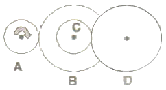
- 20
- 40
- 160
- 320
(정답률: 61%)
88. 다음 중 인체를 구성하는 체액 중에서 세포외액에 대한 설명이 아닌 것은?
- 세포의 핵과 세포질에서도 세포외액이 존재한다.
- 세포와 세포사이에도 세포외액이 존재한다.
- 혈장과 림프액도 세포외액의 일부이다.
- 뇌척수액, 안구의 초자체액, 관절의 활액도 세포외액의 일부이다.
(정답률: 45%)
89. 다음 중 자세조절에 관한 감각기전이 아닌 것은?
- 시각
- 체성감각
- 청각
- 전정계로부터의 말초입력
(정답률: 67%)
90. 다음 금속 중에서 부식이 잘 일어나서 생체재료롤 사용할 때 주의가 필요한 금속은?
- 금
- 은
- 백금
- 철
(정답률: 84%)
91. 다음 그림은 인장강도보다 낮은 하중 조건에서 파단이 일어날 때까지 반복적으로 하중을 가하여 파괴됨을 측정한 피로시험 그래프이다. 그래프를 보면 특정한 응력이하에서는 무한히 반복해서 하중을 가하더라도 파괴가 일어나지 않게 된다. 이와 같이 무한히 반복하여도 피로파괴가 일어나지 않는 응력을 무엇이라 하는가?
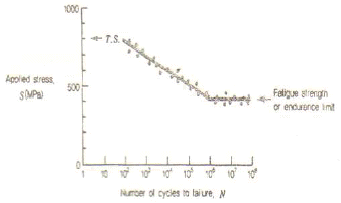
- 피로한도
- 인장강도
- 파괴강도
- 항복강도
(정답률: 71%)
92. 다음 중 인체 세포 괴사의 물리적 원인이 아닌 것은? (단, 생체외 세포에 한함)
- 섭씨 45도 이상의 고온
- 고압전류
- X-선
- 섭씨 15도의 저온
(정답률: 66%)
93. 의료용 세라믹 재료가 가지는 특성 중 거리가 먼 것은?
- 생체 친화적이다.
- 내마모성, 내부식성이다.
- 압축강도가 강하다.
- 성형 및 가공이 쉽다.
(정답률: 79%)
94. 유체의 이동을 방해하려는 성질을 무엇이라고 하는가?
- 저항성
- 점성
- 비유동성
- 강성
(정답률: 74%)
95. 다음 중 인공 관절용 금속재료의 구비 조건이 아닌 것은?
- 취성
- 내마모성
- 내식성
- 기계적 강도
(정답률: 67%)
96. 수술용 봉합사 재료 중 분해성 재료에 해당하는 것은?
- 실크
- polymide
- cotton
- PGa(Poly Clycolic Acid)
(정답률: 77%)
97. 다음 중 운동학(kinematics)에서 다루지 않는 것은?
- 관절각속도
- 보장(step length)
- 관절각도
- 지면반력
(정답률: 72%)
98. 다음과 같은 단면을 가진 두 축이 전달할 수 있는 최대 토크의 비
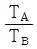
를 구하면? (단, 두 축은 동일한 재료이다)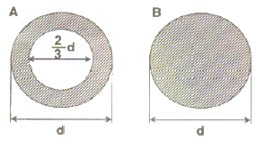
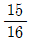
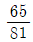
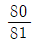
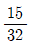
(정답률: 60%)
99. 다음 중 방사선을 측정하는 단위가 아닌 것은?
- WB(Weber)
- Sv(Sivert)
- R(Roentgen)
- Gy(Gray)
(정답률: 75%)
100. 다음 중 초음파의 생리적 효과가 아닌 것은?
- 조직 온도 상승
- 조직의 대사 증가
- 혈관수축 및 혈류량 감소
- 생체막 투과성 상승
(정답률: 66%)